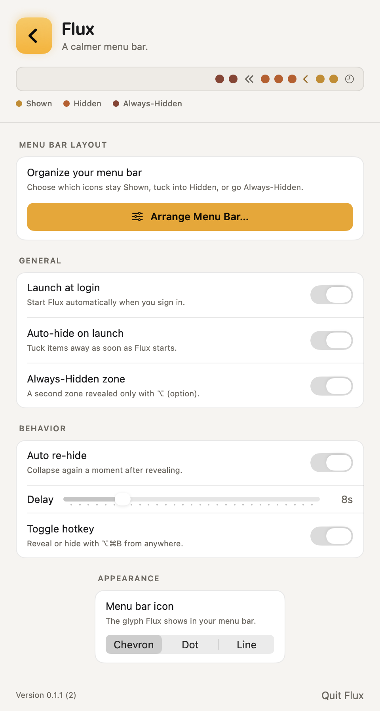
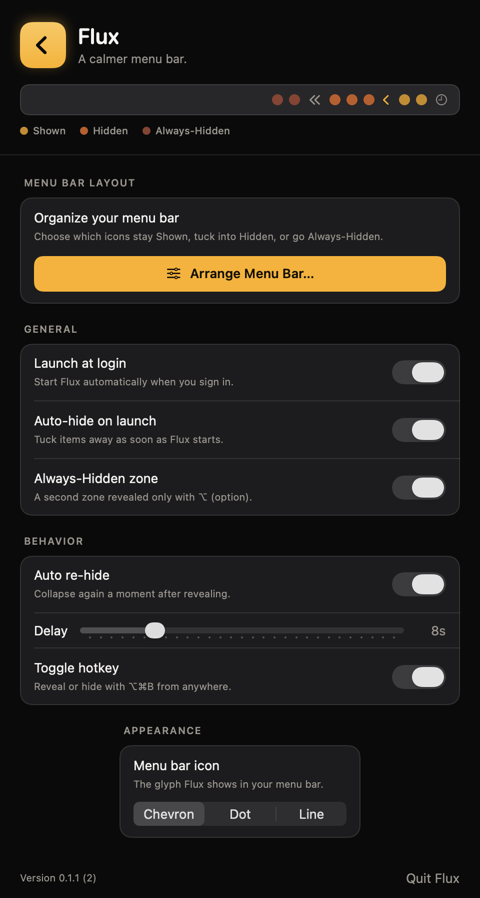

Flux tucks away the menu-bar icons you don't need right now — fast, rock-stable, and without the Screen Recording or Accessibility permissions other managers demand.
Universal · macOS Sonoma 14 or later · v0.1.1
No continuous screen capture, no polling, no redraw loop. Flux only reacts when you click. It just sits there — quietly.
No Screen Recording. No Accessibility. The core hide/reveal needs nothing — so there's nothing to grant, and nothing to break.
Relies on documented NSStatusItem behaviour, not private or capture APIs — so macOS updates don't quietly break it.
Always visible, right where you left them.
Revealed when you click the Flux chevron.
Revealed only with ⌥ — fully out of the way.
Assign an icon to a zone by ⌘-dragging it across a Flux divider — the native macOS gesture, no permissions required. Arrange Mode makes the invisible boundaries visible with labeled ‹ Hidden / ‹ Always Hidden markers so you can see exactly where to drop each one.


SMAppService API.